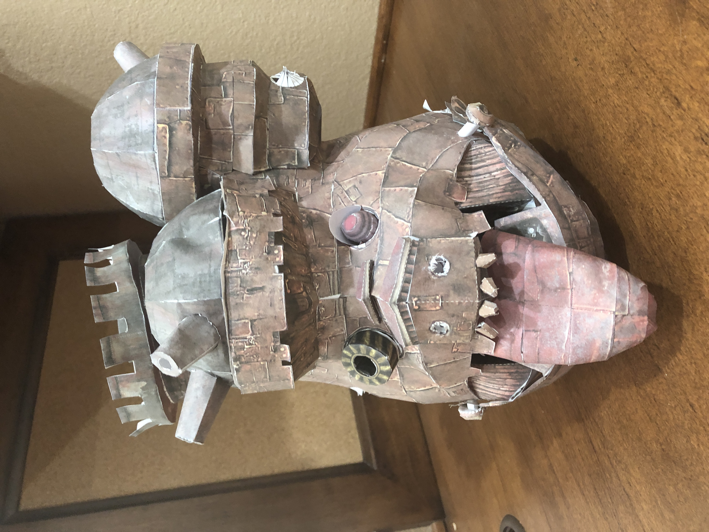

I really enjoy putting together papercrafts. Although most of the papercrafts I've created are video game characters, my favorite papercraft that I've worked on has been the moving castle from the movie Howl's Moving Castle.

This Howl's Moving Castle papercraft is incomplete since I still need to add the legs and some of the details on the sides, but the body and front features are finished, as seen in the picture. Even though I printed out a template to create the papercraft, none of the parts were labeled, so I had to figure out how to connect them myself.
Creating 3D objects out of paper requires patience and precision since it takes a significant amount of time to cut out each minute piece, and when putting the pieces together, it's very easy to accidentally crush a part of the paper. However, I love how papercraft allows me to make such impressive creations with such simple materials as paper and glue. Some papercrafts like this one even have moving parts, using paper as axles!